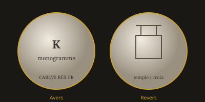

Monnaies Féodales de la France
Introduction à la numismatique médiévale — du denier carolingien aux gros tournois (Xe – XVe siècles)

Qu’est-ce qu’une monnaie féodale ?
Après l’éclatement de l’Empire carolingien, le droit de battre monnaie — privilège royal — fut progressivement concédé ou usurpé par les grands seigneurs, les évêques et certaines villes. On appelle monnaies féodales (ou monnaies seigneuriales) toutes les pièces frappées en France hors du contrôle direct du roi, entre le Xe et le XVe siècle environ.
Contrairement au monnayage romain unifié que nous explorons dans les autres sections de ce site, le système féodal produit une mosaïque d’ateliers, de types et de titres métalliques. Chaque seigneurie pouvait émettre son propre denier, souvent imité du denier royal mais portant le nom ou les armes du seigneur.
Le denier : unité de base
Hérité du denarius romain via le denier d’argent carolingien (réforme de Pépin le Bref puis de Charlemagne), le denier reste l’unité monétaire fondamentale du Moyen Âge. Douze deniers valent un sou (solidus), vingt sous valent une livre. La plupart des monnaies féodales sont donc des deniers d’argent (ou de billon, alliage dégradé) de module réduit (14–20 mm).
Principales catégories d’émetteurs
On distingue classiquement :
- Seigneurs laïcs : ducs, comtes, barons (ex. : deniers des comtes de Champagne, des ducs de Bretagne, des comtes de Toulouse).
- Évêques et archevêques : nombreux ateliers épiscopaux (Laon, Meaux, Clermont, Le Puy, etc.).
- Abbayes : certaines grandes abbayes frappaient aussi (Saint-Martial de Limoges, Saint-Martin de Tours…).
- Villes : communes ayant obtenu le droit de monnayage (ex. : deniers de la commune de Cahors).
Évolution et réformes royales
À partir du XIIIe siècle, les rois de France (Philippe Auguste, saint Louis, Philippe le Bel) s’efforcent de reprendre le contrôle de la monnaie. L’introduction du gros tournois (1266) sous saint Louis marque un tournant : une pièce d’argent plus lourde et de meilleur aloi, destinée à concurrencer et à unifier le marché monétaire.
Progressive interdiction des ateliers seigneuriaux, rappels de monnaies, ordonnances : le monnayage féodal décline au profit du monnayage royal aux XIVe et XVe siècles, même si certaines seigneuries (Bretagne, Bourgogne, Navarre…) conservent longtemps leurs propres frappes.
Points d’intérêt pour le collectionneur
Les monnaies féodales offrent une richesse iconographique et historique considérable : croix, monogrammes, légendes latines ou romanes, portraits stylisés, armes parlantes. Leur étude croise l’héraldique, la géographie historique et l’histoire des institutions. Les ouvrages de référence classiques restent ceux de Poey d’Avant (Monnaies féodales de France) et les catalogues régionaux plus récents.
Lien avec l’histoire romaine
Le denier médiéval descend directement du denier romain. Les techniques de frappe (marteaux, coins gravés), le vocabulaire monétaire et même certains types (croix dérivées de symboles antiques) montrent la continuité numismatique sur plus d’un millénaire. C’est pourquoi cette page complémentaire trouve sa place aux côtés de l’exploration des médailles romaines inspirée de l’ouvrage de Jean-Louis Schulz (1783).
En amont : les monnaies carolingiennes
Avant l'éclatement féodal, le denier carolingien de Pépin et de Charlemagne avait unifié le monnayage franc sur l'argent. C'est ce denier qui sert de modèle aux frappes seigneuriales et épiscopales des siècles suivants.